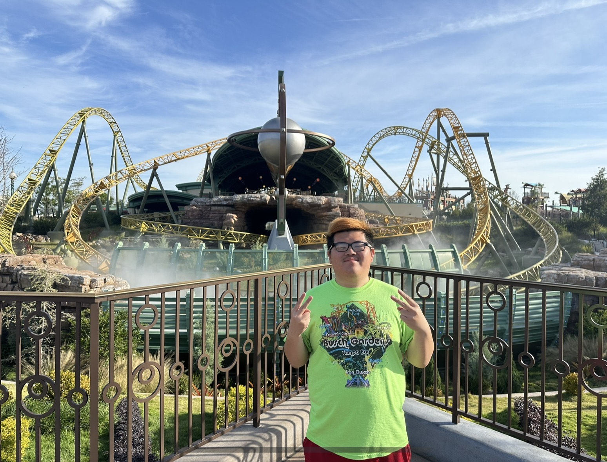
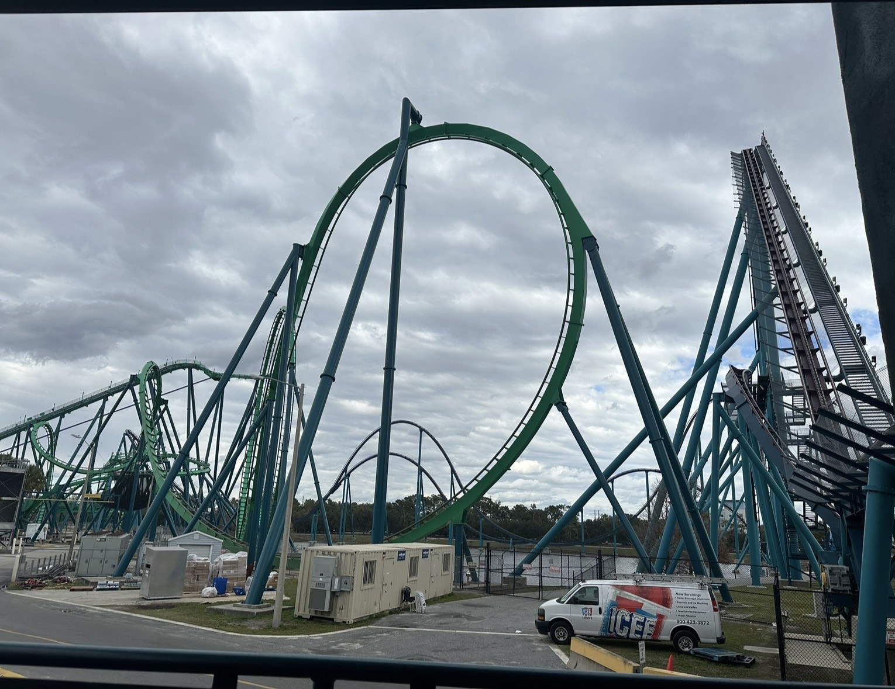

Current 2026
Coaster Journey:
From my first ride on Stardust Racers in Epic Universe in Orlando, Florida to getting my 200th coaster at Cedar Point in Sandusky, Ohio, I have been to multiple parks and ridden many new roller coasters and re-rode some I have already experienced.
Explore the journey
Parks Visited:
21
States Visited:
5
New Coasters Ridden:
59
Previous 2025
Coaster Journey:
From getting on Flash Vertical Velocity at Six Flags Great Adventure in New Jersey in its opening year to hitting up the best coaster park in Orlando, Florida with SeaWorld Orlando. I have been to multiple parks and ridden many new roller coasters and re-rode some I have already experienced.
Explore the journey
Parks Visited:8
States Visited:4
New Coasters Ridden:20